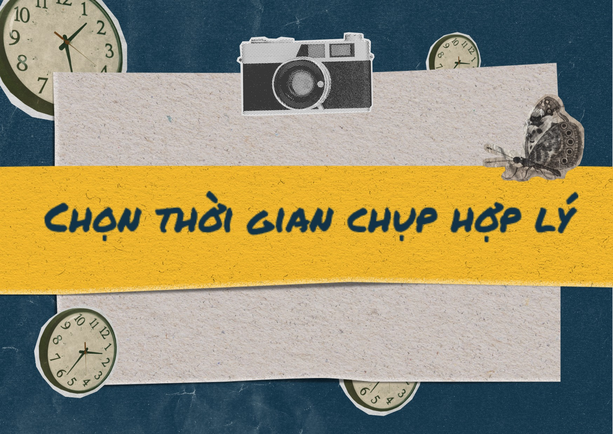

1. Chọn thời gian chụp hợp lý
Ánh sáng trong suốt ngày không đồng đều. Tránh chụp vào giữa buổi trưa khi ánh sáng mạnh mẽ và góc chiếu thẳng. Thay vào đó, hãy chụp vào sáng sớm hoặc chiều muộn để có ánh sáng mềm mại và ấm áp hơn.
Mùa đông không chỉ mang đến không khí lạnh giá mà còn là thời điểm lý tưởng để tạo ra những bức ảnh ngoại cảnh độc đáo và ấn tượng. Tuy nhiên, để có được những bức ảnh tuyệt vời khi chụp ngoài trời, cần có một số lưu ý đặc biệt.
Ánh sáng trong suốt ngày không đồng đều. Tránh chụp vào giữa buổi trưa khi ánh sáng mạnh mẽ và góc chiếu thẳng. Thay vào đó, hãy chụp vào sáng sớm hoặc chiều muộn để có ánh sáng mềm mại và ấm áp hơn.
Đảm bảo cân bằng trắng đúng để màu sắc trong ảnh trung thực và tự nhiên. Bạn có thể chọn cài đặt tự động cân bằng trắng hoặc cài đặt thủ công dựa trên điều kiện ánh sáng.
Nếu bạn chụp ảnh có chủ thể như tóc, váy áo hoặc cây cỏ, hãy chú ý đến hướng gió. Bạn có thể chọn thời điểm khi không có gió hoặc tìm một vị trí có chỗ che gió để tránh làm mất đi sự tự nhiên của chủ thể.
Thử nghiệm chụp từ các góc độ khác nhau để tạo nên sự đa dạng trong bức ảnh. Bạn có thể thử chụp từ trên cao, từ dưới thấp, hoặc tìm những góc nhìn độc đáo để mang đến một góc nhìn mới mẻ và sáng tạo.

Nếu máy ảnh của bạn hỗ trợ, hãy chụp ảnh ở chế độ RAW. Định dạng này cho phép bạn xử lý ảnh sau khi chụp với nhiều tuỳ chỉnh linh hoạt hơn và giữ được chi tiết tốt hơn trong các khu vực sáng và tối.
Thử những góc chụp không truyền thống, sử dụng kỹ thuật đặc biệt như dùng ống kính gương lồi (fisheye) hoặc áp dụng các hiệu ứng nghệ thuật để tạo ra ảnh độc đáo và sáng tạo.
Mỗi khoảnh khắc ngoài trời đều mang đến cơ hội để bạn sáng tạo và thể hiện cái nhìn độc đáo của mình qua từng bức ảnh. Chúc bạn có những buổi chụp ảnh ngoại cảnh thật thành công và đầy cảm hứng!